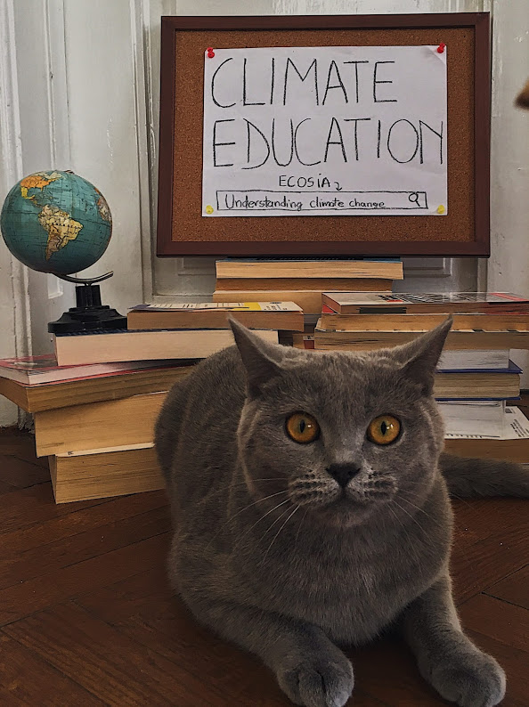

One of the galaxy's greatest heroes
In a galaxy far far away lived princess Leia. She was one of the greatest leaders of the Rebells and worked to end the tyranny out of the galaxy. Leia is on of the most iconic characters of George Lucas'es world-wide famous movies - "Star wars". One of Leia's most known characteristic is her hairstyle, that is characterised through the two buns on the sides of her head

Like the entire fandom, I liked Leia's character a lot. You may wonder why now. Here are some other interesting character traits to understand why she is so amazing:
- intelligent
- fearless
- skilled fighter
- strong leader
Meet Leia - the cat

One of the galaxy most beloved cat
Back in our galaxy lives another really cool Leia, the cat. The two have a lot in common, because they are both princesses, rebells and good fighters. Other than the obvious fact that one is a cat and the other is a fictional character, they also differ through their level of fearless and braveness. The cat is brave only when she fights opponents that she is confortable with, such as her family. The rest of the time she is just a scared kitten.
To get to know her better, here are some cute and funny photos of her:
|  |
|---|